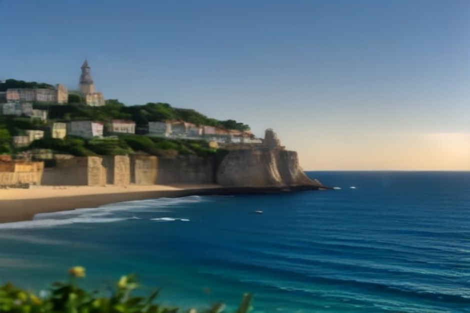

Vous avez entendu parler de la fête de Caniçal à Madère, la fameuse Festa da Piedade, et vous voulez savoir ce qui s'y passe vraiment, à quelle date elle tombe et si elle vaut le détour. Réponse courte : c'est une fête de village, pas un spectacle pour touristes. Une vingtaine de bateaux de pêche portent la statue de la sainte patronne le long de la côte, jusqu'à une chapelle posée sur une colline que l'on ne rejoint pas facilement à pied. L'édition 2026 a eu lieu les 19 et 20 septembre. Voici comment elle se déroule, et comment préparer la prochaine.
Festa da Piedade 2026 : les dates et ce qu'il faut retenir
La fête a lieu le troisième week-end de septembre. En 2026, elle s'est donc tenue les 19 et 20 septembre à Caniçal, un village de pêcheurs à l'extrémité est de Madère.
Elle honore Nossa Senhora da Piedade, Notre-Dame de la Piété, sainte patronne de la paroisse et protectrice des pêcheurs qui travaillent cette côte atlantique depuis des générations.
Si vous lisez ces lignes après la fête, ne vous découragez pas : elle revient chaque année à la même période. Le plus sûr est de vérifier les dates exactes auprès de la mairie ou de la paroisse quelques semaines avant votre voyage, puis de réserver vos vols et votre voiture en conséquence.

Une fête que les pêcheurs se paient eux-mêmes
La Festa da Piedade est une fête votive, financée et organisée en grande partie par la communauté des pêcheurs de Caniçal. Traditionnellement, ils mettent de côté chaque année une part de leurs revenus de pêche pour la payer.
Cela s'explique par l'histoire du lieu. Caniçal fut le principal port baleinier de Madère jusqu'à la fin de la chasse commerciale à la baleine, au début des années 1980. Aujourd'hui encore, la pêche au thon reste au cœur de la vie du village. Quand on vit de la mer, la dévotion à une sainte qui protège les marins ne se perd pas, même si des traditions semblables se sont éteintes dans d'autres paroisses côtières.
Des centaines de visiteurs, venus de toute l'île et d'ailleurs, assistent à la fête chaque année. Mais l'esprit reste celui d'une promesse que le village se fait à lui-même. C'est ce qui lui donne son charme, et c'est aussi pourquoi il vaut mieux y venir en curieux discret plutôt qu'en spectateur exigeant.
La procession en mer, samedi après-midi
Le moment fort du week-end est la procissão marítima, la procession en mer, qui se déroule le samedi après-midi. Voici l'enchaînement tel qu'il est décrit pour cette fête :
- Vers 15 h, la statue de Nossa Senhora da Piedade est portée à pied de l'église paroissiale jusqu'au port.
- Une vingtaine de bateaux de pêche locaux l'y attendent, fraîchement ornés de drapeaux et de guirlandes.
- L'un d'eux, tiré au sort parmi la flotte, a l'honneur de porter la statue.
- La flottille longe ensemble la côte jusqu'au Monte da Piedade, au pied de la chapelle.
- L'image est ensuite ramenée jusqu'à l'église.
À terre, le reste du week-end s'organise autour d'une messe, d'une fête de rue avec cuisine et vins locaux, et de musique en direct qui se prolonge en soirée.
Un conseil pratique : arrivez au port avant le départ de la procession. C'est là que l'ambiance est la plus belle, quand les bateaux se remplissent et que la statue approche. Je n'ai pas d'horaire plus précis que celui de 15 h environ, alors prévoyez de la marge.
La chapelle de la Piedade : un vœu de marins sur la falaise
Selon la tradition locale, un groupe de marins pris dans une tempête au large de cette côte, persuadés que leur bateau allait se fracasser sur les rochers, firent le vœu de bâtir une chapelle s'ils en réchappaient. Ils tinrent parole.
La petite Capela da Piedade, qui date probablement du XVIIe siècle, se dresse depuis sur une colline isolée appelée Monte Gordo, ou Monte da Piedade. Elle domine Prainha, l'une des très rares plages de sable naturel de Madère, tout près du début de la péninsule de Ponta de São Lourenço.
Le lieu est saisissant, volontairement à l'écart. C'est aussi la raison pour laquelle la fête a besoin de bateaux : la chapelle n'a jamais été pensée pour être facile d'accès par la terre.
La chapelle n'a jamais été pensée pour être facile d'accès par la terre : c'est tout l'intérêt des bateaux.
Aller à Caniçal depuis Funchal
Caniçal se trouve à la pointe est de Madère, à environ 30 km de Funchal. Comptez 40 à 50 minutes de voiture par la voie rapide VE1. Si vous séjournez à Funchal, une voiture de location ou un taxi sont les solutions les plus simples pour y arriver à l'heure.
Mieux vaut prévoir cette journée comme une sortie à part entière. Elle ne se combine pas avec une sortie en mer le même jour au départ de Funchal, et nous préférons être clairs là-dessus.
Peut-on voir la fête depuis un bateau de Chifbay ?
Non. Caniçal est bien à l'est du littoral que couvre un bateau privé au départ de la Marina do Funchal, ponton C. Nos sorties vont vers l'ouest : Câmara de Lobos, Cabo Girão, Ribeira Brava, Ponta do Sol.
Comment organiser votre journée
Si vous voulez les deux, découpez la journée en deux temps :
- Le matin : une sortie en bateau privé avec Chifbay le long de la côte sud-ouest, vers Câmara de Lobos et Cabo Girão. La sortie à la journée part à 10 h ou à 14 h ; si vous visez la fête, choisissez le départ de 10 h.
- L'après-midi : un trajet en voiture vers l'est, pour arriver à Caniçal avant le départ de la procession, vers 15 h.
Soyez réaliste sur le timing : 2 h 30 de mer minimum pour la sortie la plus courte, puis 40 à 50 minutes de route. La journée sera serrée. Si vous craignez de courir, gardez plutôt la fête pour un jour entier, et la mer pour un autre. L'annulation est gratuite jusqu'à 24 heures avant le départ, ce qui permet de s'organiser sans stress. Les infos pratiques sont sur notre page infos pratiques.
Que faire d'autre autour de Caniçal ?
Comme vous faites le trajet jusqu'ici, autant en profiter. Trois idées pour remplir le reste de la journée :
- Le Museu da Baleia, le musée de la baleine, retrace en détail l'histoire baleinière du village, bien avant que l'observation des baleines ne prenne le relais.
- Prainha, juste en dessous de la chapelle, est l'une des seules plages de sable naturel de l'île. Une curiosité à Madère, où l'on se baigne surtout sur des galets.
- La péninsule de Ponta de São Lourenço, un peu plus loin vers l'est, offre l'une des randonnées côtières les plus arides et les plus désertiques de Madère.
Faut-il y aller ?
Si vous cherchez une fête organisée pour le public, avec gradins et horaires précis, ce n'est pas ici. Si vous voulez voir un vrai village de pêcheurs tenir une promesse de plusieurs siècles, sur l'eau plutôt que sur une scène, alors oui, cela vaut le déplacement.
Et si votre séjour tombe à une autre période, la côte sud-ouest vous attend toute l'année. Vous pouvez parcourir nos idées d'excursions en bateau à Madère, voir un coucher de soleil en bateau privé ou lire les avis de nos clients. Le bateau est à vous seul, jusqu'à 5 personnes, avec repas et boissons à bord, une vidéo 360° Insta360 et des photos prises avec un vrai appareil.
Questions fréquentes
Retrouvez plus bas les réponses aux questions que l'on nous pose le plus souvent sur la Festa da Piedade. Pour les sorties en bateau, voyez notre page d'accueil et le journal.